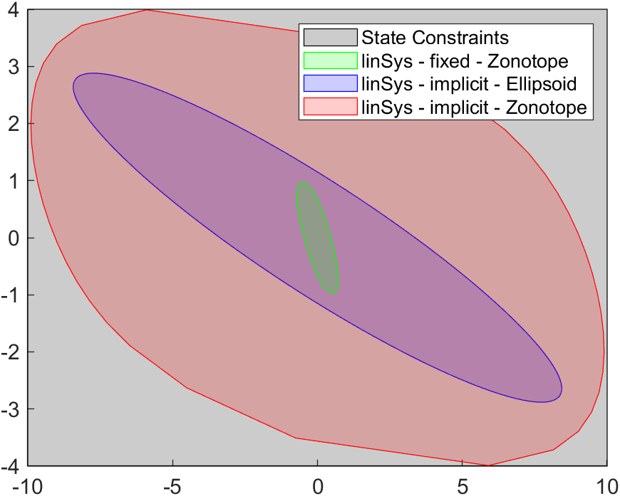
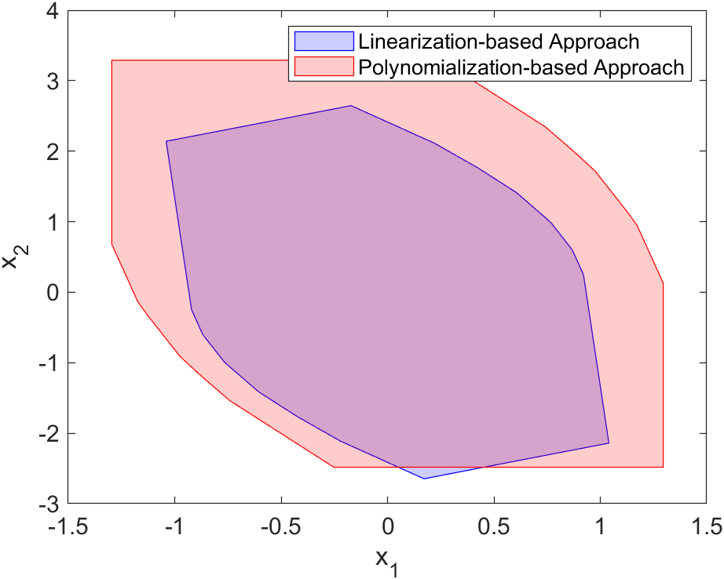
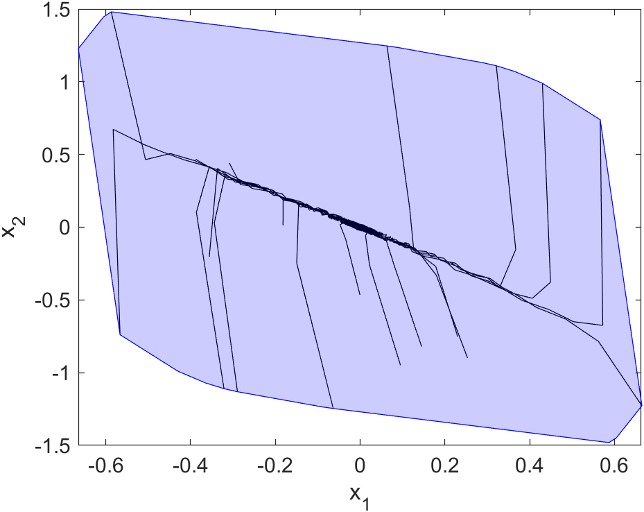
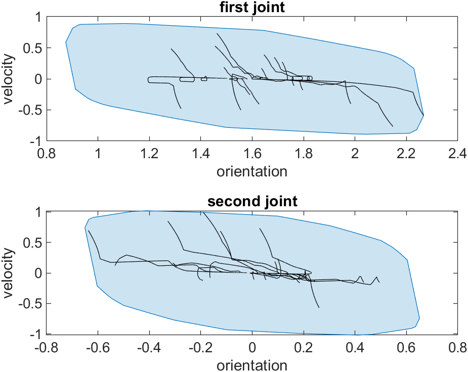
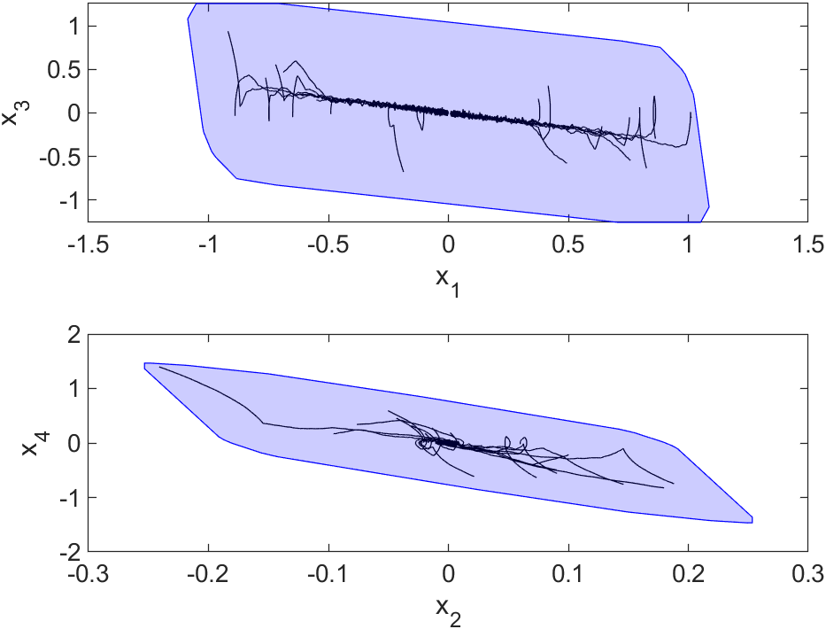
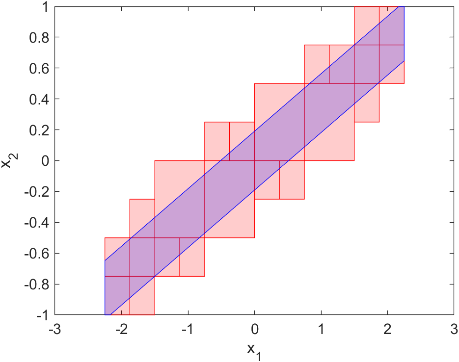

Linear terminal-region methods


Safe terminal-region computation using the method and benchmark named in the execution record.
6 terminal-region examples and 4 original test sections are rerun with MOSEK, separately from the broader algorithm coverage record.
MOSEK execution manifest (JSON) · Broader algorithm coverage record · Reproduction runner and setup instructions · Browse result figures · AROC source license
Environment: MATLAB R2024b, CORA v2026.0.1, YALMIP R20250626, CasADi 3.7.2/IPOPT and MOSEK 11.0. A renewed personal academic license passed a solve in a fresh MATLAB process. Upstream terminal-region solver selections are retained. Independent AROC/CORA checkouts prevent generated-file conflicts with the SeDuMi batch.
Each example retains its original benchmark settings, including real-time options. “Example executed” means the script finished and the listed sampled checks passed. It is distinct from “Test passed”, which refers to the original MATLAB unit-test assertions. Sampling and script completion are not independent formal proofs. Failed items are listed without a success claim.
Plot-data downloads contain time-point set geometry and up to ten recorded simulations per results object; continuous-time tubes are omitted. The original full MATLAB workspaces remain in the local research/mosek-run directory; the display subset does not change which trajectories were checked.
Wall times include script execution, sampled checks, data serialization, and figure export; the first case also includes parallel-pool initialization. These numbers are not a controlled performance comparison between algorithms.
| Case | Type | Outcome | Wall time (s) | Checks / issue | Files |
|---|---|---|---|---|---|
| example_termReg_linSys_doubleIntegrator | example | Example executed | 38.3 | See the original example output and separate algorithm tests. | Full log (GZIP) · Source · Plot data (.mat) |
| example_termReg_nonlinSysOpt_SD_cart | example | Executed; diagnostic warning | 60.3 | See the original example output and separate algorithm tests. CORA emitted an abstraction-error-order warning during verification; inspect the full log. | Full log (GZIP) · Source · Plot data (.mat) |
| example_termReg_nonlinSysLinApproach_DT_cart | example | Example executed | 10.1 | Sampled inputs satisfy constraints: passed | Full log (GZIP) · Source · Plot data (.mat) |
| example_termReg_nonlinSysLinApproach_SD_robotArm | example | Executed; diagnostic warning | 132.5 | Sampled inputs satisfy constraints: passed CORA emitted an abstraction-error-order warning during verification; inspect the full log. | Full log (GZIP) · Source · Plot data (.mat) |
| example_termReg_nonlinSysPolyApproach_SD_cartpole | example | Executed; diagnostic warning | 55.5 | Sampled inputs satisfy constraints: passed CORA emitted an abstraction-error-order warning during verification; inspect the full log. | Full log (GZIP) · Source · Plot data (.mat) |
| example_termReg_subpaving_artificialSystem | example | Example executed | 78.4 | Sampled inputs satisfy constraints: passed | Full log (GZIP) · Source · Plot data (.mat) |
| testTerminalRegion_TestLinSys | unit-test | Test passed | 69.0 | Original test assertions passed. | Full log (GZIP) · Test source |
| testTerminalRegion_TestSubpaving | unit-test | Test passed | 76.5 | Original test assertions passed. | Full log (GZIP) · Test source |
| testTerminalRegion_TestNonlinSysOpt_Linearization_basedApproach | unit-test | Test passed; diagnostic warning | 23.5 | Original test assertions passed. CORA emitted an abstraction-error-order warning during verification; inspect the full log. | Full log (GZIP) · Test source |
| testTerminalRegion_TestNonlinSysOpt_Polynomialization_basedApproach | unit-test | Test passed; diagnostic warning | 45.5 | Original test assertions passed. CORA emitted an abstraction-error-order warning during verification; inspect the full log. | Full log (GZIP) · Test source |

Safe terminal-region computation using the method and benchmark named in the execution record.

Linearization (blue) and polynomialization (red) for the same sampled-data cart benchmark and original settings.

Linearization-based terminal region for the discrete-time nonlinear cart.

Linearization-based terminal region for the sampled-data robot arm.

Polynomialization-based terminal region for the sampled-data cart-pole.

Subpaving terminal region for the supplied artificial nonlinear system.
